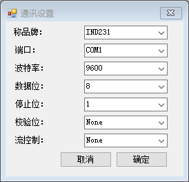

通讯设置。

- 1， 称品牌, 目前支持：梅特勒.托利多（IND231,IND263/XK3190)
- 2， 端口：默认为COM1,由软件自动识别有多少端口。
- 3， 波特率：默认：9600, 称仪表与软件通讯速率。
- 4， 数据位：默认：8, 每次传送数据量
- 5， 停止位：默认：1, 使用多少停止。
- 6， 校验位：默认：None, 奇偶较验位。
- 7， 流控制：默认：None, 由硬件还是软件控制数据流。
基本要素：
- 请在使用软件前核实您据用品牌的仪表（表头）
- 请确认您电脑是否有端口，即DB9串口，有些主脑自带了此端口，如果没有请与我们购买外接USB串口或PCI板串口卡
操作步骤：
- 点击“称品牌”：选择您所使用称仪表品牌。
- 点击“端口”： 确定你所连接串口连接方式。
- 波特率、停止位、校验位、流控制通常情况下按默认即可。
- 点击“确定”按钮，点击“取消”放弃本次更改。
操作提示：
- 数据连接线建议您选择带有屏蔽功能的线材，也可选我们定制线材，点击这里查看